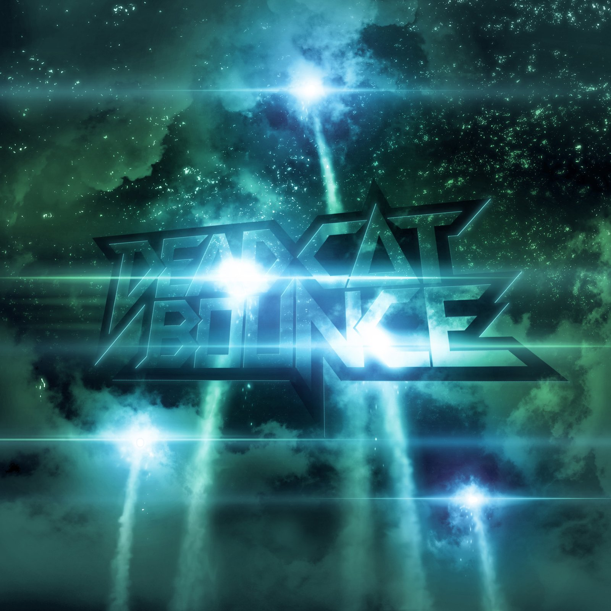

BARTHÉLÉMY VIELLE
CLVSTR
WORK
STUDIES
STONEFIELD
INFORMATION
Motion on ·
← INDEX STUDIES
CLVSTR / Recherches choisies
Dead Cat Bounce
Artwork · musique / 1 composition
Second Chance : composition de titre, volumes sombres et lumière cyan.

01 / 01 — Second Chance / composition originale
↗︎
← Recherche précédente
Manifestes CLVSTR
Recherche suivante ↗︎
Ridgeworks